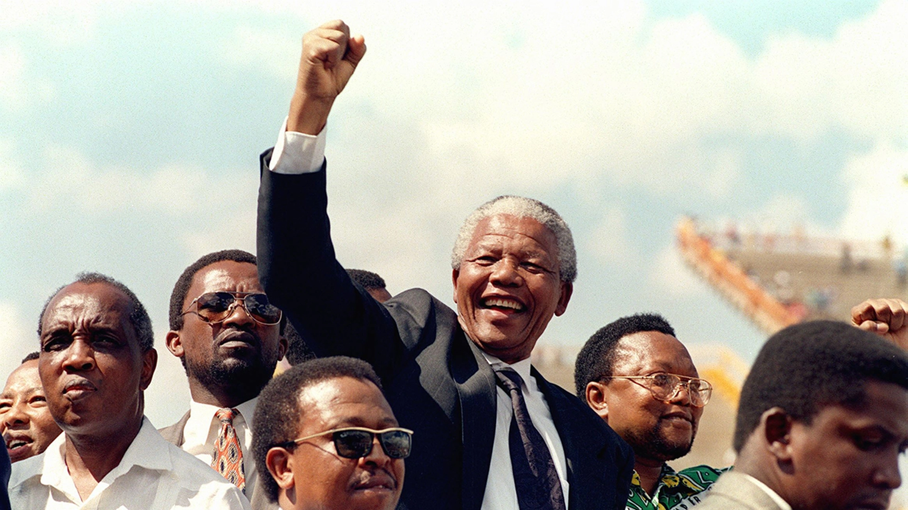
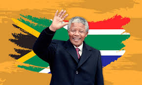
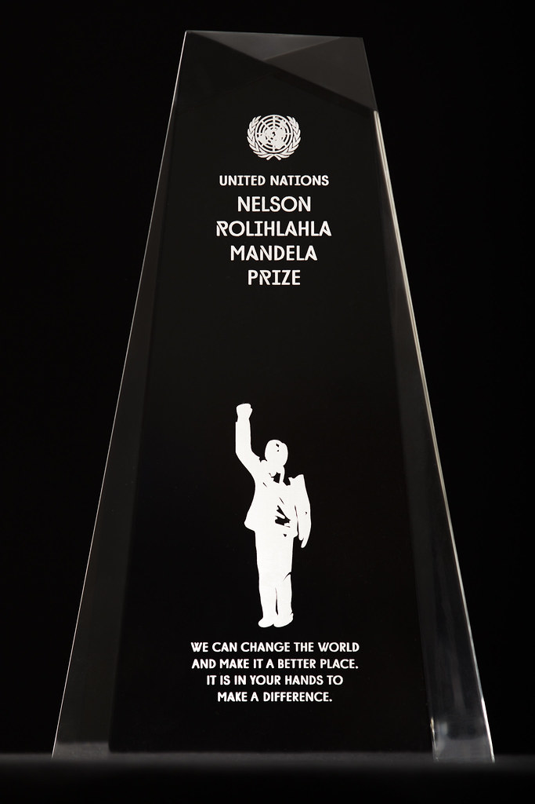

Tribute to "Nelson Mandela"

Rolihlahla Mandela was born into the Madiba clan in the village of Mvezo, in the Eastern Cape, on 18 July 1918. His mother was Nonqaphi Nosekeni and his father was Nkosi Mphakanyiswa Gadla Mandela, principal counsellor to the Acting King of the Thembu people, Jongintaba Dalindyebo. In 1930, when he was 12 years old, his father died and the young Rolihlahla became a ward of Jongintaba at the Great Place in Mqhekezweni1.
Hearing the elders’ stories of his ancestors’ valour during the wars of resistance, he dreamed also of making his own contribution to the freedom struggle of his people.
Video Overlay Mandela
He attended primary school in Qunu where his teacher, Miss Mdingane, gave him the name Nelson, in accordance with the custom of giving all schoolchildren “Christian” names.
He completed his Junior Certificate at Clarkebury Boarding Institute and went on to Healdtown, a Wesleyan secondary school of some repute, where he matriculated.
Mandela began his studies for a Bachelor of Arts degree at the University College of Fort Hare but did not complete the degree there as he was expelled for joining in a student protest.
On his return to the Great Place at Mqhekezweni the King was furious and said if he didn’t return to Fort Hare he would arrange wives for him and his cousin Justice. They ran away to Johannesburg instead, arriving there in 1941. There he worked as a mine security officer and after meeting Walter Sisulu, an estate agent, he was introduced to Lazer Sidelsky. He then did his articles through a firm of attorneys – Witkin, Eidelman and Sidelsky.
.jpeg)
Political Career
Mandela, while increasingly politically involved from 1942, only joined the African National Congress in 1944 when he helped to form the ANC Youth League (ANCYL).
In 1944 he married Walter Sisulu’s cousin, Evelyn Mase, a nurse. They had two sons, Madiba Thembekile "Thembi" and Makgatho, and two daughters both called Makaziwe, the first of whom died in infancy. He and his wife divorced in 1958.
Mandela rose through the ranks of the ANCYL and through its efforts, the ANC adopted a more radical mass-based policy, the Programme of Action, in 1949.
In 1952 he was chosen as the National Volunteer-in-Chief of the Defiance Campaign with Maulvi Cachalia as his deputy. This campaign of civil disobedience against six unjust laws was a joint programme between the ANC and the South African Indian Congress. He and 19 others were charged under the Suppression of Communism Act for their part in the campaign and sentenced to nine months of hard labour, suspended for two years.
A two-year diploma in law on top of his BA allowed Mandela to practise law, and in August 1952 he and Oliver Tambo established South Africa’s first black-owned law firm in the 1950s, Mandela & Tambo.2
At the end of 1952 he was banned for the first time. As a restricted person he was only permitted to watch in secret as the Freedom Charter was adopted in Kliptown on 26 June 1955.

President
On 10 May 1994 he was inaugurated as South Africa’s first democratically elected President. On his 80th birthday in 1998 he married Graça Machel, his third wife.
True to his promise, Mandela stepped down in 1999 after one term as President. He continued to work with the Nelson Mandela Children’s Fund he set up in 1995 and established the Nelson Mandela Foundation and The Mandela Rhodes Foundation.
"It is in your hands" – Mandela Day quote
174094413
In April 2007 his grandson, Mandla Mandela, was installed as head of the Mvezo Traditional Council at a ceremony at the Mvezo Great Place.

Awards and honors
Nobel Peace Prize (1993)
Mandela received a Nobel Peace Prize together with South Africa’s last apartheid president, FW de Klerk “for their work for the peaceful termination of the apartheid regime, and for laying the foundations for a new democratic South Africa.” According to the official Nobel Prize website, Madiba is the fifth most popular Nobel Peace Prize winner following Martin Luther King and Mother Theresa, and fifth most popular across all categories.
Amnesty International’s Ambassador of Conscience Award (2006)
Amnesty’s most prestigious human rights award was set up in 2003. It is awarded annually to individuals who show exceptional leadership in the fight to protect and promote human rights and human conscience. Other winners include Burmese politician and human rights defender Aung San Suu Kyi, U2 frontman Bono and former Czech President Vaclav Havel. The Award aims to promote the work of Amnesty International by association with the life, work and example of its ‘Ambassadors’.
Freedom of the City of London (1996)
It is one of the oldest surviving traditional awards as it is believed that the first Freedom was presented in 1237. The medieval term ‘freeman’ meant someone who was not the property of a feudal lord but enjoyed privileges such as the right to earn money and own land. Fellow freemen of the City of London include Winston Churchill, SA High Commissioner Dr Zola Skweyiya and footballer Aaron Mokoena.
For more information Nelson Mandela_wiki